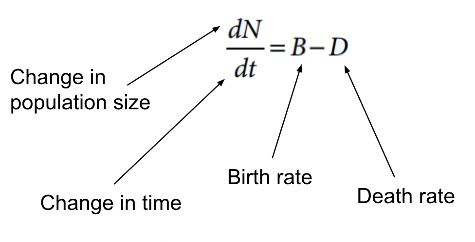

Populations
Population: a group of individuals of the same species living in an area
- Population ecology: analyzes the factors that affect population size and how and why it changes over time
Density: the number of individuals per unit area
- Can be determined by:
-
Counting the number of individuals in the population (rarely done)
- Sampling techniques (count small areas, average the areas, and then use the averages to estimate total population size)
- Knowing a population’s density provides more information about its relationship to the resources it uses
Dispersion: the pattern of spacing among individuals within a population
- Clumped: individuals gather in patches
- Uniform: evenly spaced individuals in a population
- Can be due to territoriality
- Random: unpredictable spacing; not common
The size of a population is not static, affected by:
- Births/deaths
-
Immigration/emigration
- Demography: the study of the vital statistics of populations and how they change over time
- Life table: an age-specific summary of the survival pattern of a population
- Represented by a survivorship curve
Population Curves
Type I curve: low death rate during early/middle life and high death rate later in life
Type II curve: constant death rate over the lifespan of the organism
Type III curve: high death rate early in life and lower death rate for those that survive early life

Change in Population Size
The per capita rate of increase can be calculated using this formula:
